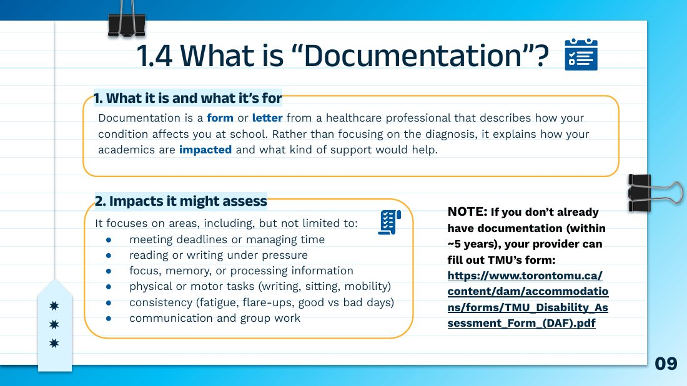
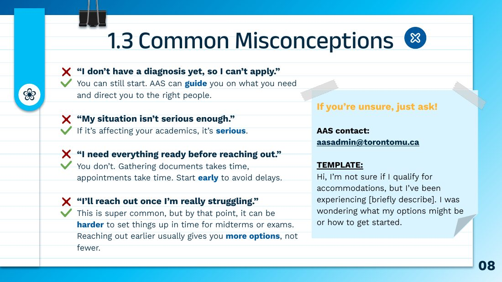
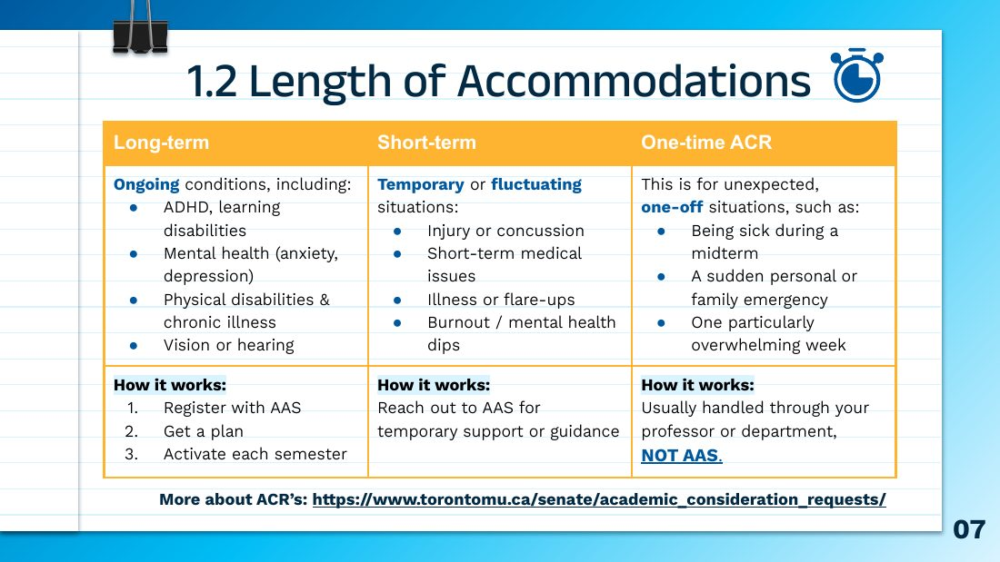

Accessibility & human-centred design
Accessibility @ TMU Pocket Guide
A 40-page, plain-language guide to accommodations, student rights, and support at TMU. Made by students, for students.
Who it's for: TMU students navigating accommodations and support, especially those who aren't sure where to start or whether they even qualify.

Where it started
After attending the 2025 Student-Led Accessibility Conference, I wrote a 13-page report on my own, analysing each workshop and proposing improvements for the next year. One of my recommendations was that the conference should give attendees something practical to keep:
“A summary sheet or slide with practical tools, strategies, and examples would make the event more informative and skill-building.”
From my conference report, October 2025
When planning started for the 2026 conference, I wanted to turn that idea into something real. Students would spend a few hours at the conference, but the questions they had about accommodations would last all year. I wanted them to leave with a resource that kept supporting them long after the event ended.
The problem
TMU has a lot of accessibility support, but finding and understanding it is hard. Information is spread across many different websites and often written in policy language. Students can get stuck on questions that seem basic but rarely get answered plainly: What even is documentation? Where do I get it? Is my situation "serious enough" to ask for help?
Writing the conference report had already got me thinking about what barriers exist and how to remove them. Many of the barriers to accessing support weren't about whether a service existed, but whether students could find it, understand it, and feel confident using it.
Research
Before writing anything, I wanted to understand what students actually struggle with and what already existed.
- Staff and community members: I met with people working on similar resources and projects to learn from their experiences and approaches.
- Students: I talked with classmates and other members of the Student Advisory Committee about where they'd gotten stuck.
- My own experience: I drew on what I'd learned navigating accommodations at TMU myself.
Design decisions
Everything in the guide is shaped around what a student needs to know, in roughly the order they'll need it.
Organized around the student, not the institution
Instead of following how university departments are structured, the guide follows a student's experience across five sections: getting support, finding community, succeeding in academics, financial support, and advocating for yourself. Accessibility affects more than grades, so the guide also covers money, community, and crisis support.
Explaining the basics plainly
The guide defines terms that are often assumed knowledge, like what "documentation" is, what it's used for, and where to get it on and off campus.

Answering the doubts that stop people from asking
A "Common Misconceptions" page tackles beliefs that keep students from reaching out, like "My situation isn't serious enough." It pairs them with a short email template, so the first step feels smaller.

Showing that accommodations aren't one-size-fits-all
A comparison table separates long-term accommodations, short-term accommodations, and one-time academic consideration requests, so students can see which one fits their situation and who to contact.

Pointing to the source
Every topic ends with a link to the official page, so students can check details and go deeper. This also keeps the guide honest: it simplifies the language, not the facts.
Outcome
- Launched in 2026 and shared with TMU students
- Presented to incoming students at SHIFT orientation
- Actively maintained: I update links and documents as university resources change
What I learned
The hardest part wasn't finding information. It was deciding what to leave out, and how to say things simply without making them less accurate. I also learned that a resource isn't finished when it launches. Links change and policies get updated, so keeping it useful is ongoing work.
What I'd do differently
When I made the guide, I hadn't yet learned how accessible formats work. The icons, clips, and layered text boxes make it look friendly, but in a PDF, decorations like these can confuse a screen reader or make it read things in the wrong order. Now I think about accessibility in the format itself from the start, not just in the words. Building this website, and writing its accessibility statement, is where I've started putting that into practice.
← Back to all work